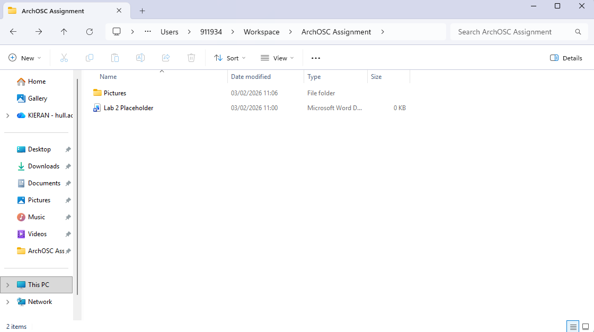
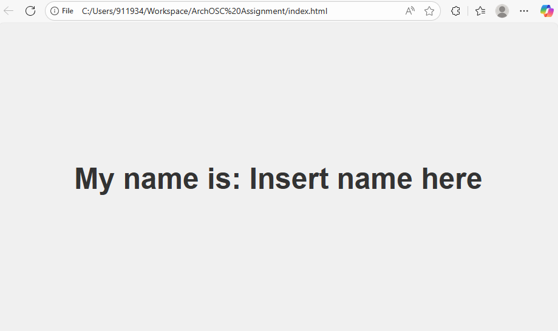
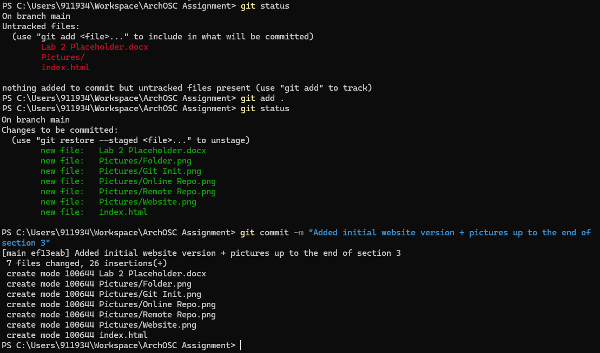
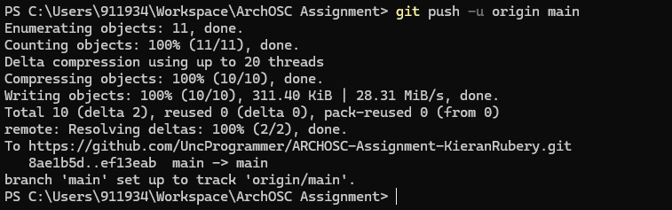
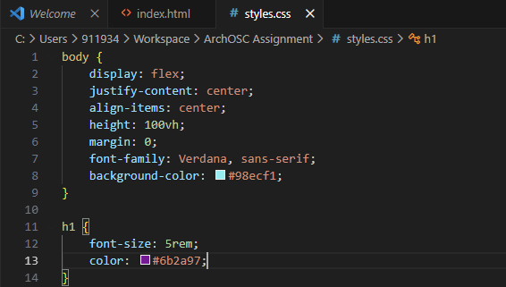

Here I have created an assignment folder within my workspace, with a pictures folder within it.
Using the command line and the command ‘git init’, I have created a local git repository within my new folder.

A new online repository has been created on the Github website to match with the local repository.

Through a few commands, I linked the local repository to the online repository and made it a remote repository. ‘git remote add origin’ linked the two, while ‘git pull origin main’ pulled what was on the online repository and placed it in the local one.

Through adding an ‘index.html’ containing some HTML code, this website was created.
Using ‘git status’ shows these new changes are not yet committed. Through using ‘git add .’ the changes are staged, and then through ‘git commit’ they are properly committed.
The changes were then pushed using ‘git push’…
…Resulting in an updated online repository.

I added a CSS stylesheet to my website…

Changing the colours and font…
Resulting in a changed website design.

I then added a new image to the website using the <img> tag…

Resulting in this third version of the website.

These changes were then uploaded to the online repository.

The website was then deployed using Github pages…

…Allowing the website to be accessed online without needing the local files.

In this lab I have learned how to work with Github to push, pull and maintain code, along with creating a website and customising it using HTML and CSS. This will be particularly useful in the industry as proper usage of Github is important for creating repositories that every coder in a team can access.